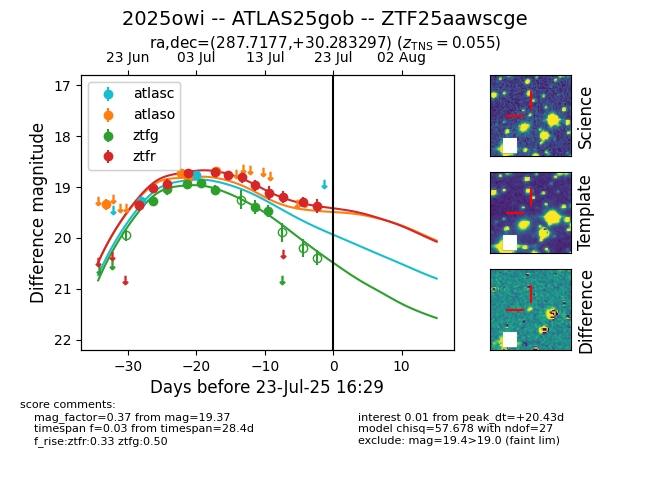

Target ZTF25aawscge at 2025-07-23 16:29, see:
FINK: fink-portal.org/ZTF25aawscge
Lasair: lasair-ztf.lsst.ac.uk/objects/ZTF25aawscge
ALeRCE: alerce.online/object/ZTF25aawscge
TNS: wis-tns.org/object/2025owi
YSE: ziggy.ucolick.org/yse/transient_detail/2025owi
alt names
ZTF25aawscge (ztf,fink)
2025owi (tns,yse)
ATLAS25gob (atlas)
coordinates:
equatorial (ra, dec) = (287.7177,+30.28330)
galactic (l, b) = (62.1960,+9.48871)
photometry
last atlasc=18.77, atlaso=18.68, ztfg=19.46, ztfr=19.37
2 atlasc, 4 atlaso, 7 ztfg, 13 ztfr detections
